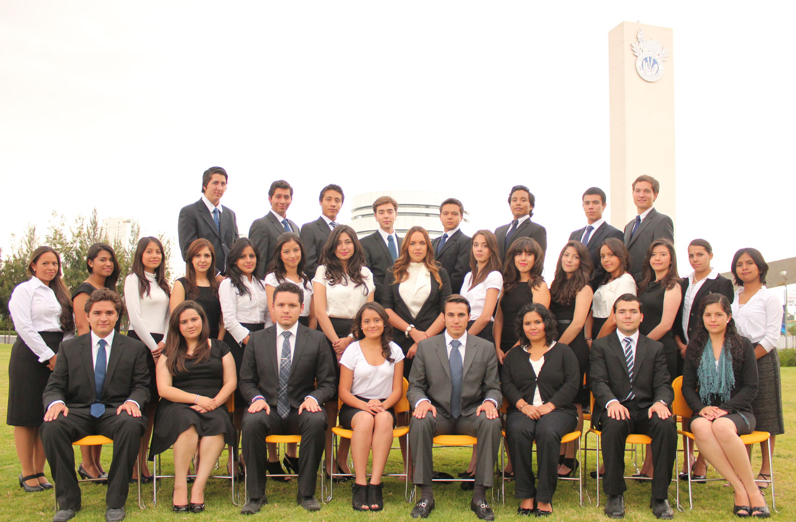
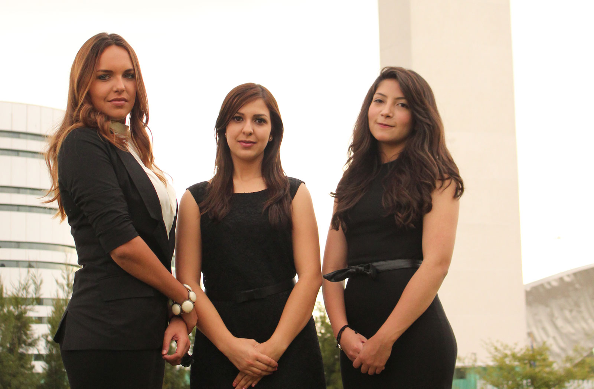
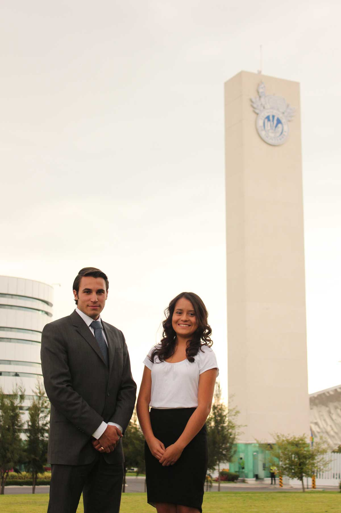

-
¿Qué es la ONU?
Las Naciones Unidas son una organización internacional que proporciona un foro a sus 193 estados miembros para expresar sus opiniones y adoptar decisiones con el propósito de mantener la paz y seguridad internacionales, así como fomentar relaciones de amistad entre la naciones, de manera que trabajen unidas para impulsar el progreso social, la mejora del nivel de vida y los derechos humanos.
-
¿Qué es MUNTCP?
MUNTCP es una simulación de las sesiones que se llevan a cabo en los comités de la Organización de las Naciones Unidas. En los comités, cada uno de los jóvenes participantes debate diversos temas desde la postura del país que le es asignado, con el objetivo de proponer soluciones reales a distintos problemas y conflictos internacionales de la actualidad. Con el ejercicio de dicha simulación, los jóvenes desarrollan habilidades y aptitudes que sustentan en gran medida su formación académica integral.
-
¿Qué queremos lograr?
El objetivo principal de MUNTCP es contribuir a la concientización de los jóvenes respecto a los problemas que existen actualmente en el mundo desde una perspectiva internacional, de manera que se llegue a acuerdos y soluciones de conflictos reales, impulsando así, no solo la formación de personas íntegras, sino desarrollando a su vez distintas habilidades encaminadas a la creación de hábitos morales y físicos que orienten a los jóvenes a una lucha por el porvenir mediante métodos pacíficos.
- 
- 
- 